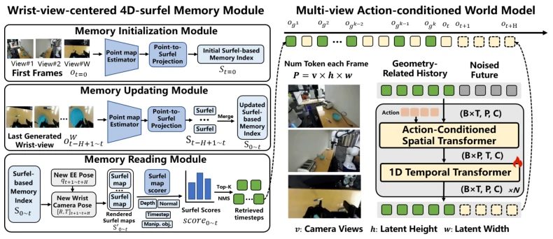
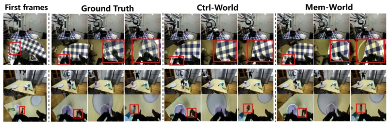
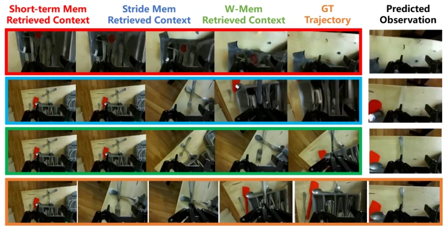
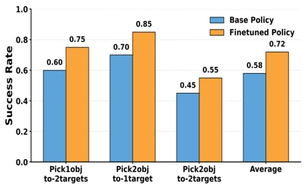
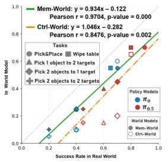
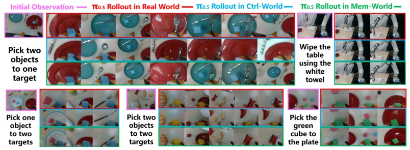

This Mem-World paper attempts to address the chronic issue of "poor memory" in robotic manipulation. When the wrist camera is occluded, the model tends to hallucinate; step sampling methods like Ctrl-World are indeed somewhat like "blind men touching an elephant". The authors devised a W-VMem, anchoring history using surfels, which sounds quite technically rigorous. The experimental data is indeed impressive, with correlation improving from 0.85 to 0.97 and success rate rising from 58% to 72%; however, if the synthetic data quality collapses, policy training becomes futile. Nevertheless, it only updates the wrist view; if the initial frame is blurry, subsequent performance fails entirely, and physical constraints are not incorporated, making it "appear plausible but still lacking the breath of true physics". Although this memory enhancement is effective, it relies excessively on initial observation quality, representing a case of "success and failure both hinge on the wrist".
研究动机Motivation
具身智能的世界模型常因手腕相机遮挡和运动导致长程预测失效。现有方法如 Ctrl-World [1] 用固定步长采样历史帧，但关节姿态相似性只是间接代理，无法处理动态遮挡。Interactive World Simulator [6] 仅调整上下文窗口，无法根本解决信息缺失。这导致模型在长视界任务中容易遗忘或幻觉场景细节，无法可靠评估策略。Mem-World 旨在通过几何感知的记忆检索，在频繁遮挡下保持场景持久性，解决现有世界模型在操作任务中“记不住”的痛点，特别是针对动态手物交互场景。
World models in embodied intelligence often fail in long-term prediction due to wrist camera occlusion and motion. Existing methods like Ctrl-World [1] use fixed step sampling of historical frames, but joint pose similarity is only an indirect proxy, unable to handle dynamic occlusion. Interactive World Simulator [6] only adjusts the context window, unable to fundamentally solve information loss. This leads to models easily forgetting or hallucinating scene details in long-horizon tasks, unable to reliably evaluate policies. Mem-World aims to maintain scene persistence under frequent occlusion through geometry-aware memory retrieval, solving the pain point of "not remembering" in existing world models for manipulation tasks, especially for dynamic hand-object interaction scenarios.
The overall process is based on a multi-view action-conditioned world model. The core is the W-VMem module, a 4D surfel-indexed memory centered on the wrist view. During initialization, a global surfel set is constructed from three views. During generation, wrist camera pose is estimated via forward kinematics based on future actions, surfels at each time step are rendered and scored, scores include geometric visibility, task relevance, and temporal decay. Top-K historical frames are selected as conditional input. After generation, only the predicted wrist view is used to update W-VMem, preserving temporal association. This design avoids timestamp confusion caused by external view updates, ensuring memory is strongly correlated with dynamic interaction. Through surfel rendering and scoring, the model can select non-redundant and information-rich historical context. Additionally, Non-Maximum Suppression (NMS) is introduced to avoid duplicate sampling, ensuring scene coverage.

Figure 1: Pipeline of Mem-World. During rollout, a wrist-view 4D surfel memory maintains a geometry-aware representation of past observations, from which relevant history frames are retrieved. Given these retrieved frames and a sequence of future actions, the multi-view action-conditioned world model predicts subsequent observations. The predicted observations are then integrated back into the memory, enabling iterative rollout with an updated memory module.
Based on the DROID dataset [12], baselines such as Cosmos Predict 2.5 [7] and Ctrl-World [1] are compared. Metrics include PSNR, SSIM, and object consistency. On long-horizon replay trajectories, Mem-World significantly outperforms Ctrl-World in the wrist view. Policy evaluation correlation improved to 0.97, better than Ctrl-World's 0.85. Synthetic data training improved long-horizon task success rate from 58% to 72%. Ablation studies show W-VMem outperforms short-sighted and step memory strategies, proving the effectiveness of geometry-aware retrieval. In complex tasks such as dual-object grasping, the model maintains object consistency and avoids hallucinations.

Figure 2: Qualitative results on long-horizon rollouts. Mem-World exhibits persistent and temporally consistent world modeling: the lid remains recoverable after transient occlusion by the gripper, and the black snack is consistently regenerated after back-and-forth camera motion. batch size of 32, which takes approximately 2 days. Considering the importance of the wrist view, we upweight the loss term associated with wrist-view predictions.

Figure 3: Ablation on memory retrieval strategies. By retrieving geometrically relevant historical frames, W-VMem helps the world model preserve consistent object appearances across future observations. In contrast, Short-term Mem and Stride Mem provide less informative context, leading to object (spoon) distortion or disappearance during rollout.

Figure 5: Policy improvement. Post-training on syn- thetic data improves the average success rate to 72%.

Figure 4: Quantitative correlations be- tween real-world and world-model.

Figure 6: Comparisons between π0.5 rollouts in the real-world, Ctrl-World, and Mem-World.